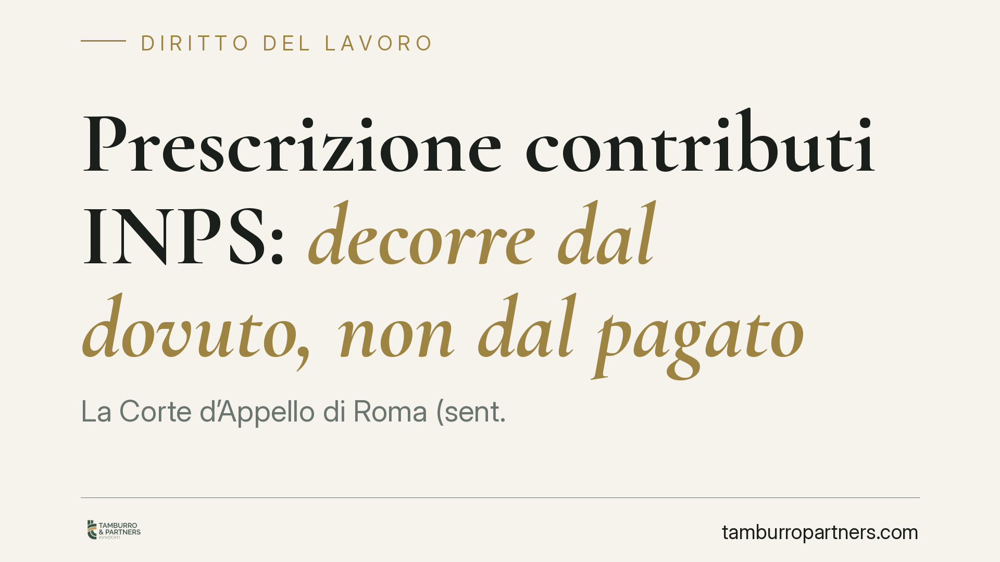

Prescrizione contributi INPS: decorre dal dovuto, non dal pagato
La Corte d'Appello di Roma (sent. 2995/2026) fissa un principio netto: i contributi previdenziali si prescrivono in cinque anni dal momento in cui la retribuzione avrebbe dovuto essere corrisposta, non da quando viene effettivamente pagata. Un chiarimento che pesa su datori, lavoratori e sulla stessa azione di recupero dell'INPS, soprattutto quando lo stipendio resta inevaso.

Il fatto
La Corte d'Appello di Roma, con sentenza n. 2995/2026, è tornata su una questione ricorrente nel contenzioso previdenziale: da quale momento inizia a decorrere la prescrizione dei contributi dovuti all'INPS quando il datore non ha pagato lo stipendio?
La risposta dei giudici è chiara. La prescrizione quinquennale decorre dalla data in cui la retribuzione avrebbe dovuto essere corrisposta, a prescindere dall'effettivo pagamento e indipendentemente da controversie o transazioni intervenute tra datore e lavoratore.
Inquadramento normativo
L'obbligo contributivo nasce con la cosiddetta *competenza* della retribuzione, cioè con la maturazione del diritto del lavoratore al compenso, non con l'incasso. È il principio della cosiddetta *retribuzione virtuale*: ai fini previdenziali rileva ciò che era dovuto in base al contratto e alla legge, non ciò che è stato materialmente percepito.
L'art. 6 del D.Lgs. 314/1997 collega la determinazione della base imponibile previdenziale alla retribuzione di competenza del periodo di riferimento. Ne consegue che il momento di maturazione dell'obbligo — e quindi il punto di partenza del termine quinquennale di prescrizione fissato dall'art. 3, commi 9 e 10, della L. 335/1995 — è ancorato alla scadenza del credito retributivo, non al suo pagamento.
La Corte ribadisce così un orientamento consolidato: l'obbligazione contributiva è autonoma rispetto all'obbligazione retributiva. Il datore deve versare i contributi anche se non ha pagato lo stipendio, e il tempo per farlo — come quello per l'INPS per pretenderli — corre comunque.
Implicazioni pratiche
Per il datore di lavoro il messaggio è netto: il mancato pagamento dello stipendio non sospende né sposta in avanti l'obbligo contributivo. Chi omette i versamenti confidando che "tanto lo stipendio non è stato pagato" si espone comunque a sanzioni e recupero, finché la prescrizione non è maturata.
Per il lavoratore l'effetto può essere sfavorevole. Se l'INPS non agisce entro cinque anni dalla data in cui la retribuzione era dovuta, il credito contributivo si estingue. Il lavoratore rischia così di trovarsi con periodi scoperti ai fini pensionistici, anche in presenza di un rapporto di lavoro formalmente regolare ma con retribuzioni non pagate.
Un punto delicato riguarda le transazioni tra datore e lavoratore. La sentenza chiarisce che accordi, rinunce o controversie sul credito retributivo non incidono sulla decorrenza della prescrizione contributiva: il termine corre comunque dalla scadenza originaria. Chi definisce una lite sul salario non "riapre" automaticamente i termini per i contributi già prescritti.
Resta ferma la possibilità, per il lavoratore, di attivare il meccanismo della cosiddetta *costituzione di rendita vitalizia* (art. 13 L. 1338/1962) per recuperare periodi contributivi prescritti per colpa del datore, a condizione di poter provare il rapporto di lavoro e la retribuzione. È una via onerosa ma spesso l'unica praticabile.
Cosa fare in concreto
- Verificate l'estratto contributivo sul portale INPS con cadenza regolare: individuare un periodo scoperto entro i cinque anni consente di intervenire prima della prescrizione.
- Segnalate tempestivamente all'INPS eventuali omissioni contributive: la denuncia del lavoratore può incidere sui termini e sull'azione dell'Istituto.
- Conservate ogni prova del rapporto e della retribuzione (buste paga, contratti, bonifici, comunicazioni): è documentazione indispensabile per la rendita vitalizia ex art. 13 L. 1338/1962.
- Datori di lavoro: non legate i versamenti al pagamento dello stipendio. L'obbligo contributivo matura sulla retribuzione dovuta; valutate un controllo periodico della regolarità DURC.
- In caso di transazione sulle retribuzioni, verificate separatamente la posizione contributiva: l'accordo non sana né riattiva i contributi eventualmente già prescritti.
La pronuncia conferma una logica di fondo del sistema previdenziale: la tutela pensionistica non può dipendere dalle inadempienze del singolo rapporto di lavoro, ma proprio per questo impone a tutti — datori, lavoratori e Istituto — di muoversi nei tempi giusti.
---
*Contributo informativo a cura di Tamburro & Partners - Avv. Giuseppe Tamburro. Non costituisce parere legale.*
Ogni storia di lavoro ha i suoi tempi.
Se gestisci HR e vuoi un confronto su contenzioso, ispezioni o licenziamenti, scrivi allo studio. Ti rispondiamo entro un giorno lavorativo.